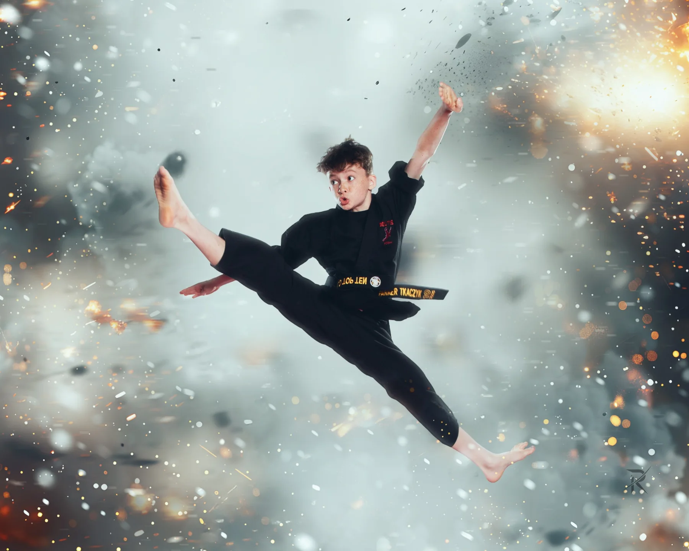
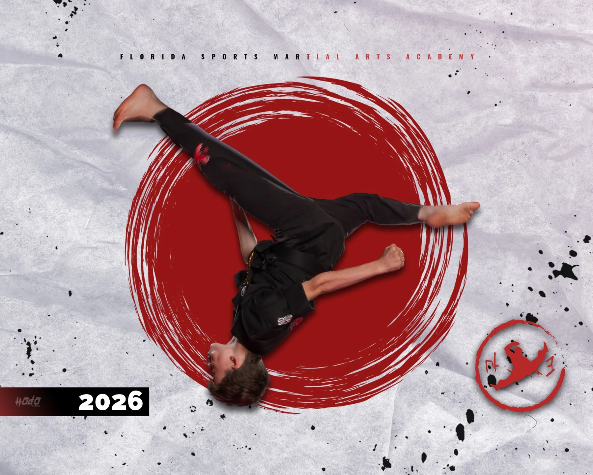
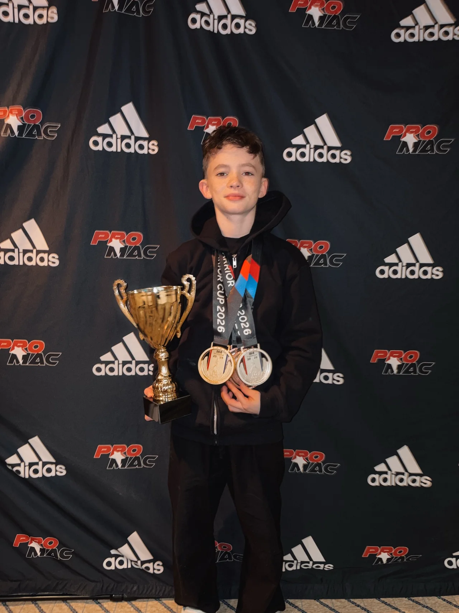
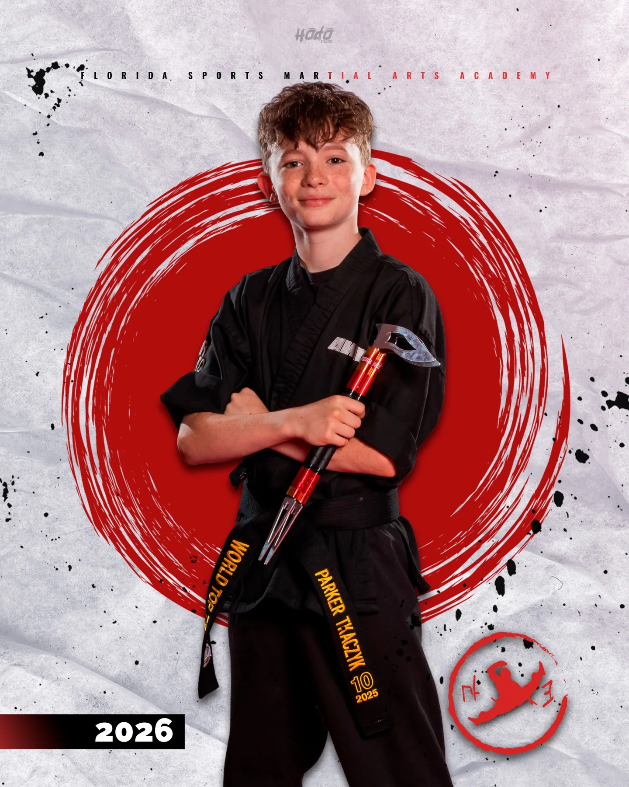
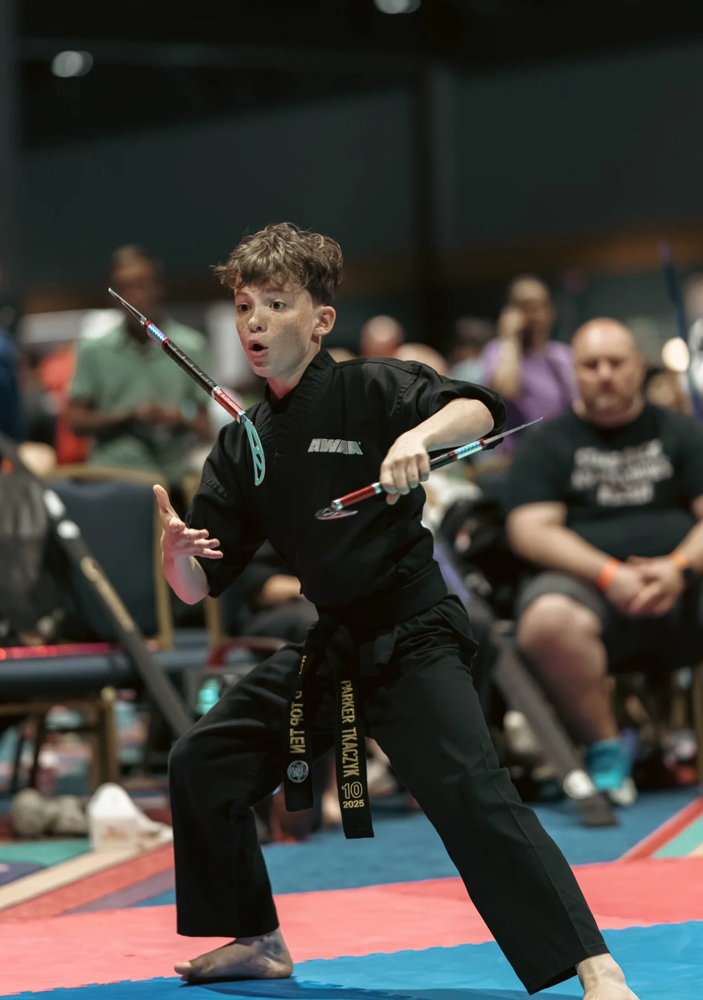
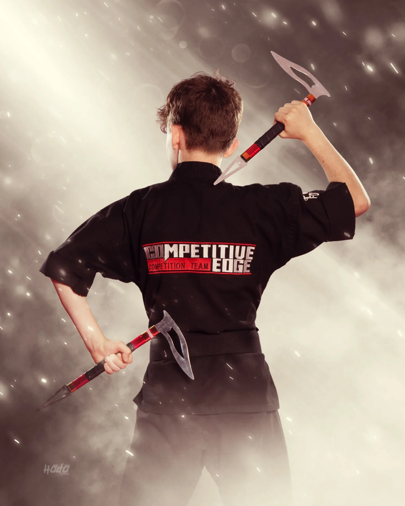

CENTRAL FLORIDA • COMPETITIVE SPORT KARATE
PARKER
TKACZYK
13-year-old competitive sport karate athlete pursuing excellence on the national competition stage.
Driven by discipline.
Defined by dedication.
Parker Tkaczyk is a 13-year-old competitive sport karate athlete from Central Florida. He trains and competes with Competitive Edge and is dedicated to continually developing his skills, creativity, athleticism, and performance.
Parker competes at tournaments where young martial artists from across the country come together to test themselves at a high level. His goal is to keep improving, represent his team with pride, and continue building toward bigger opportunities in sport karate.

Built to perform.
Parker competes across multiple disciplines that combine traditional martial arts skill, creativity, athleticism, and performance.
Extreme Forms
High-level athletic movement, tricks and dynamic technique.
Extreme Weapons
Advanced weapons performance combining speed and athleticism.
Musical Forms
Martial arts performance choreographed to music.
Musical Weapons
Weapons performance synchronized with music and choreography.
Demo Team — Competitive Edge
Team performance as a member of Competitive Edge.
Precision.
Power.
Performance.
Sport karate is more than learning techniques. Parker works to combine timing, flexibility, control, creativity and stage presence into every performance.
He is especially passionate about forms and weapons, where every movement has to be intentional.

COMPETITION • GROWTH • GOALS
Chasing the
next level.
Parker's journey is built one tournament, one performance and one training session at a time. As he continues to compete, his focus is on learning from every experience and earning opportunities to compete at the highest levels of his sport.
This section is intentionally simple for now. We'll replace it with Parker's specific titles, rankings, tournament results and goals once you give me the details.
Help Parker
keep chasing the goal.
Competitive sport karate involves tournament registration, travel, lodging, training, equipment and other expenses. Parker is looking to build relationships with businesses and organizations that want to support a dedicated young athlete.
A sponsorship is more than a donation. It is an opportunity to support Parker's journey while becoming part of his story as he competes and grows.
Inquire About Sponsorship

